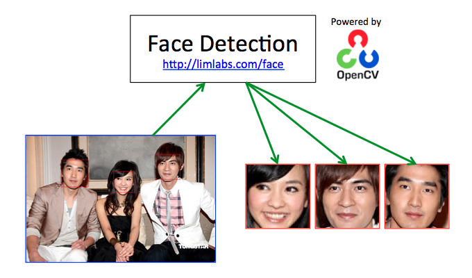

Face detection with OpenCV
Some effective and accurate Face Detection algorithms are realized in OpenCV. This program demonstrated the utilization of a HAAR cascade classifier to determine the locations and sizes of faces in a digital image. Each detected face is marked with a rectangular box and saved as a separate image file. You may find a copy of the source code at Github. Face Detection technology can be used in photo management or video surveillance system.
